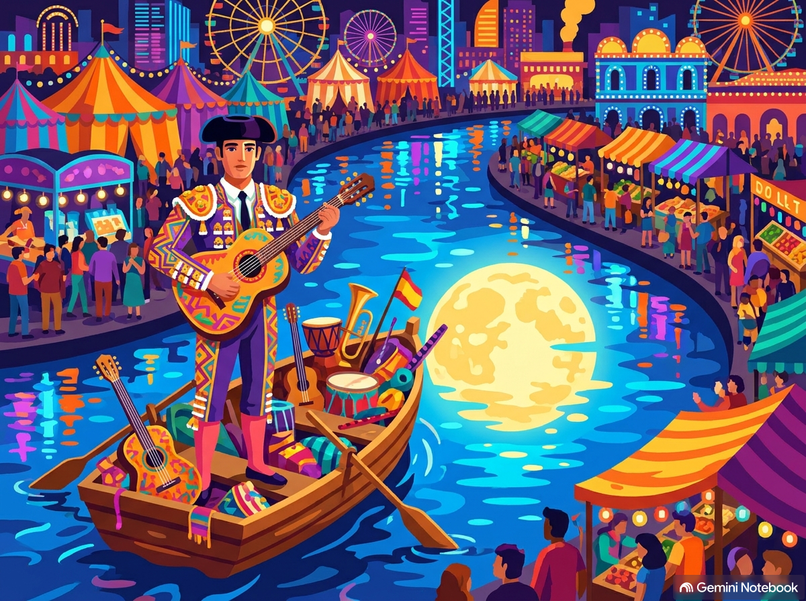
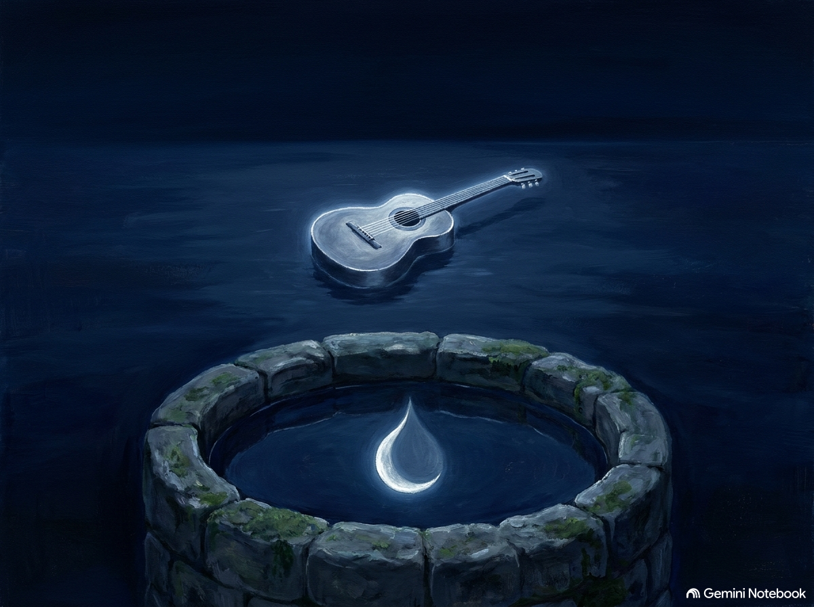

GIẢI MÃ ĐÀN GHI TA CỦA LOR-CA (THANH THẢO) & KẾT NỐI LIÊN VĂN BẢN
AI thường vẽ sai không khí bi tráng thành lễ hội rực rỡ và hiểu sai cái chết của Lor-ca là sự buông xuôi; người đọc dễ ngộ nhận tiếng đàn “nâu / lá xanh” là hiện tượng vật lý. Hãy chuẩn hóa chứng cứ từ Mặt 1–5 và kết nối liên văn bản ở Mặt 6.
Tọa độ Di sản & Bối cảnh Tây Ban Nha 1936
Bản đồ Vector Tây Ban Nha 1936
Dòng thời gian Phê-đê-ri-cô Gác-xi-a Lor-ca (1898–1936)
Bấm chọn mốc03 Vật thể Văn hóa Tây Ban Nha trong Thi phẩm
Nhạc cụ linh hồn Andalusia; hóa thành sinh thể rỉ máu và con thuyền ánh sáng màu bạc đưa Lor-ca vào bất tử.
Từ sắc “đỏ gắt” khát vọng cách tân chuyển thành “bê bết đỏ” tố cáo trực diện bạo lực phát xít Franco.
Vật hộ mệnh dân gian; hành động “ném lá bùa vào xoáy nước” là sự khước từ che chở tầm thường.
Phân tầng 03 lớp Dữ liệu & Phổ âm Ghi-ta
| Hình tượng | Tầng 1: Vật lý (Khách quan) | Tầng 2: Văn bản (SGK) | Tầng 3: Thẩm mỹ (Nghệ thuật) |
|---|---|---|---|
| Tiếng đàn ghi-ta | Sóng âm cơ học từ dao động 6 dây nylon (tần số Hz, biên độ); không có màu vật lý. | tiếng ghi ta nâu; lá xanh biết mấy; tròn bọt nước vỡ tan; ròng ròng máu chảy. | Ẩn dụ chuyển đổi cảm giác: trầm ấm đất đai → khát vọng sống → mong manh → bi phẫn. |
| Vầng trăng & Ghi-ta bạc | Ánh sáng phản xạ từ Mặt Trăng; bề mặt đàn ánh bạc phản quang trên mặt nước. | giọt nước mắt vầng trăng long lanh trong đáy giếng; chiếc ghi ta màu bạc. | Vũ trụ đồng cảm khóc thương người nghệ sĩ; cái đẹp thanh khiết hóa thân bất tử. |
Một bài viết khẳng định: “Khi Lor-ca gảy dây đàn ở tần số 450 Hz, sóng âm biến đổi trực tiếp thành bước sóng ánh sáng 530 nm tạo ra tiếng ghi ta lá xanh.” Em xử lý nhận định này thế nào?
Định lượng 31 Dòng thơ & Mô hình Sóng cảm xúc
Giải mã 04 Mật mã Tượng trưng – Siêu thực
Tiếng đàn bọt nước & Cỏ mọc hoang
Âm thanh bọt nước vừa trong trẻo vừa mong manh trước họng súng phát xít. Dù “không ai chôn cất”, tiếng đàn vẫn mọc lên tự nhiên, bất diệt như loài cỏ hoang.
Áo choàng đỏ gắt → bê bết đỏ
Từ sắc đỏ rực khát vọng cách tân nghệ thuật của người đấu sĩ trên đấu trường chữ nghĩa, tấm áo choàng biến thành cảnh tượng máu đổ kinh hoàng tại pháp trường Víznar năm 1936.
Giọt nước mắt vầng trăng
Hình ảnh siêu thực kết tinh nỗi đau nhân thế thành viên ngọc nghệ thuật thanh khiết. Vũ trụ rỏ lệ khóc thương Lor-ca, biến cái chết hữu hạn thành ánh sáng vĩnh cửu.
Đường chỉ tay đứt & Ghi-ta bạc
Sinh mệnh trần thế bị cắt ngang ở tuổi 38, nhưng trên dòng sông rộng vô cùng giữa sinh – tử, chiếc ghi-ta màu bạc hóa con thuyền ánh sáng đưa Lor-ca bình thản bước vào bất tử.
Kiểm chứng Đầu ra AI & Thực hành Vai trò 3
Khung Đối chiếu Minh họa Human–AI

Phân tích lỗi AI: AI hiểu theo nghĩa đen lễ hội đô thị hiện đại: vẽ chàng đấu sĩ bò tót mặc lễ phục tím vàng chơi đàn trên thuyền đầy nhạc cụ và cờ Tây Ban Nha giữa dòng kênh đèn neon, nhà cao tầng, vòng đu quay, lều hội chợ, trăng tròn vàng rực và đám đông — đánh mất hoàn toàn không khí bi tráng cô độc năm 1936 và biểu tượng giọt nước mắt vầng trăng trong đáy giếng.

Chuẩn siêu thực Thanh Thảo: Tông xanh đêm thẫm tĩnh mịch; tiền cảnh là miệng giếng đá rêu cổ chứa giọt nước mắt ánh bạc ôm vầng trăng khuyết; hậu cảnh là cây đàn ghi-ta bạc phát sáng trôi đơn độc trên dòng sông rộng tối thẫm.
Phiếu học tập số 03 — Nhật ký Phản biện AI
“Chi tiết chàng đi như người mộng du và ném lá bùa cô gái Di-gan vào xoáy nước ở Khổ 5 chứng tỏ Lor-ca đã hoàn toàn bế tắc, tuyệt vọng và buông xuôi trước cái chết.”
Kết nối Bài 2 (Cảm hoài – Tây Tiến – Lor-ca) & Phản biện 2–1
1. Đài Quan Sát Liên Văn Bản
2. Luyện tập Kiến thức (07 câu)
0 / 7 đúngPhủ đều 6 mặt Ru-bích, chấm điểm và giải thích đáp án tức thì.
3. Không Gian Đám Mây Khối 12 & Phản biện 2-1
Viết đoạn văn (~150 chữ) trực tiếp lên Padlet chung. Sau đó chọn 2 bài của bạn khác lớp để góp ý 2-1 (2 khen, 1 đề xuất).